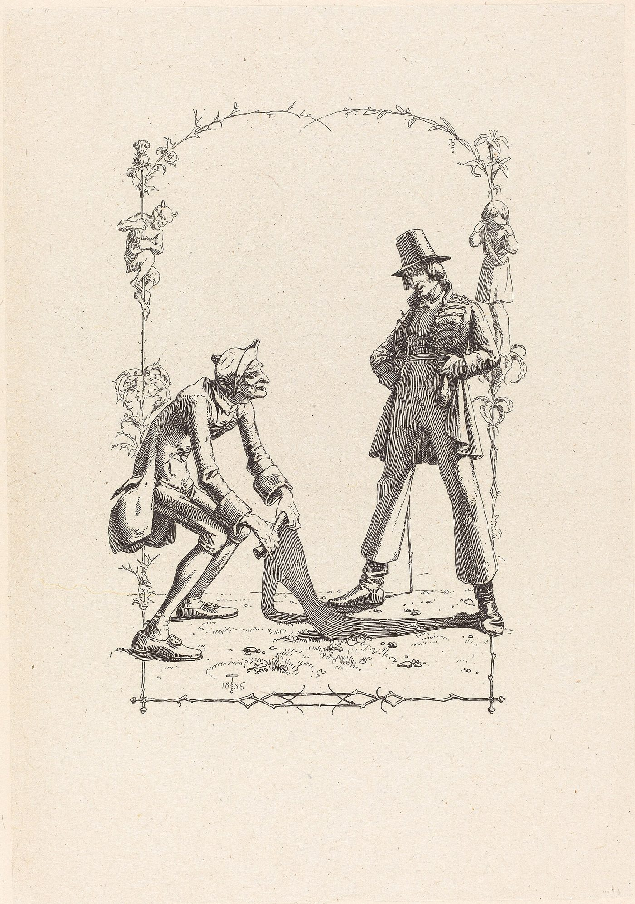

shadow work
シャドーワーク
人の嫌なところが気になって仕方ない。同じ失敗を繰り返す。急に怒りが噴き出す。自分を責めてしまう。そうした「自分の見たくない部分」とどう向き合えばよいと言われているか。

人の、ある種の態度が、どうしても気になる。理由が分からないほど腹が立つ。似た相手と、似た形で、何度もこじれる。穏やかにしていたのに、あるとき急に、自分でも驚くほど怒りが出る。そして、そんな自分を責めてしまう。
こうしたことを、心理学では「影」という言葉で説明してきました。そして、その影と向き合う作業を「シャドウワーク」と呼ぶ人たちがいます。このページでは、よくある悩みをひとつずつ取り上げて、この分野で名前の知られた人たちがそれぞれ何と言っているかを見ていきます。
この分野では、影について、次のように語られています。
まず、影とは何か
まず、こう断られています。「影は、悪いものではありません。邪悪なものの話をしているのではありません」。名前が怖いので身構える人が多いけれど、怖がる必要はない、と。
この言葉を西洋の心理学に持ち込んだのは、精神科医のカール・グスタフ・ユングです。ユングは影を、「本人が自分について認めることを拒んでいる、すべてのもの」と表現しています。
この分野でよく使われる言い換えはこうです。「道を歩いていて、太陽が当たれば、足もとに影ができる。でも誰も自分の影を見ながら歩かない。それと同じで、影は自分の性格のうち、自分で見ていない、認めていない部分のことです」
影はどこで生まれるのか
感じやすい男の子がいる。世界をよく感じて、すぐ泣く。親が言う。「泣くな」「いつも感情的だ」「女の子みたいに泣くな」。その瞬間、この子は困る。自分の感じやすさが、いちばん大事な人に受け入れられていないから。
それで、この子は感じやすさを押し込めることを覚える。「その日が、この子の影が生まれた日です」。以後、外からの反応に応じて、認めてもらえない部分を押し込めるたびに、影は育っていく。
この分野では、ここに心理学にはない見方が足されています。影は心のなかだけにあるのではなく、体にもある、と。上の男の子でいえば、感じやすさを押し込めるために、彼は「感じる場所そのもの」を閉じることになる、という説明です。また、影のもとが今生の子ども時代だけでなく前世にもある、という考え方も語られていますが、これはこの分野の見方で、心理学の側の説明には含まれていません。
影は、悪いところだけではない
この分野でも、ユング派の研究者も、同じことを言っています。影には、良いものも入っている。
その説明では、才能や力が影に入るのは、それを出すことへの恐れがあるから。だから、影と向き合うときには、この恐れとも向き合うことになる、と。
ウィキペディアの項目も、「影には肯定的な側面も隠れていることがある。とくに自己評価の低い人において」とし、心理学者キャロリン・カウフマンの「影は創造性の座である」という言葉を引いています。
人の嫌なところが、気になって仕方ない
影を見つける方法として、いちばん簡単だと言われているのが、これです。「誰かの何が嫌なのかを、よく見ること」。
ある教師は自分の体験として、父親との関係が長く難しく、何年も心のなかで父親をこう見ていた、と話しています。「頑固で、レンガの壁みたいで、感情を出さない。私を愛しているなんて一度も言わない」。
父親が亡くなって何年もたち、この作業を始めてから気づいたことがある、と。
「私が父に投げつけていたものは、ぜんぶ、そのときの私自身の鏡でした。父は頑固だった。私と同じように。父は心を閉じていた。そのときの私と同じように」
「誰かの何かが嫌なら、それは自分のどこかにある。自分になければ、そこまで気にならないはずだから」
心理学では、これを投影と呼びます。ウィキペディアの項目は、影は「認知の歪みとして、まわりの人へ投影される」とし、それによって「自分の認めたくない性質を、自分では否定しながら、他人のなかにははっきり見る」ことができてしまう、と説明しています。
ここで大事なのは、「だからあなたが悪い」という話ではない、ということです。気になる、ということは、見つけやすいということでもあります。
急に怒りや嫉妬が出て、あとで後悔する
この分野では、これを「引き金」と呼び、「引き金は、私のいちばんの友だち」という言い方をしています。
パートナーと出かけた先で、パートナーが魅力的な人と話しはじめる。とたんに嫉妬が押し寄せる。
影に気づいていないときは、影がそのまま行動になる。相手のところへ行って、怒りをぶつける。
影に気づいているときは、そこでひとつ深く息をして、自分に問う。「なぜ、いまこう感じているのか」。すると、その下にあるものが見えてくる。たとえば「置いていかれるのが怖い」という、押し込めてきた恐れ。
「影のままに行動するたびに、影は大きくなります。そこにエネルギーが流れ込むから。だから、行動する前に捕まえることが大事です」
最も繰り返されているのが、この「行動する前に、息をひとつ」です。押し込めるのでも、ぶつけるのでもなく、いったん見る。それだけで、影に注ぎ込む力が減る、と。
同じことを、繰り返してしまう
ある教師は自分の体験として、恋愛の例を話しています。「関係に入ると、自分が消えていた。私はどこにもいなくて、相手のためだけに生きていた」。ひとつの関係では気づかなかった。いくつもの関係で同じことが起きて、初めてそれが自分の影だと分かった、と。
ここは、ツインレイのページで心理療法士のアネット・ヌニェスが言っていた「前回と同じやりとりが繰り返されていないか」と重なります。繰り返しそのものが、手がかりになる、という点です。
自分を責めてしまう
影と向き合うときに、いちばん起きやすいつまずきが、これです。向き合い方の1番目と2番目に、この話が置かれています。
「影は、受け入れられなかったことから生まれました。だから、影を責めることは、受け入れられなさをさらに足すことです。逆効果です」。答えは自分を丸ごと受け入れること。影も自分の一部だから。
2．判断せずに、ただ見る
さっきの嫉妬の例で、影を捕まえたあとに「私はなんて馬鹿なんだ、こんなことで嫉妬して」と自分を責めはじめたら、それは影を大きくしている、と。「判断は、受け入れないことの一形態です」。だから、嫉妬を見つけて、見て、判断を足さない。「私は人間で、嫉妬する。それだけ」。
この分野の言い方では、影と向き合う目的は「影をなくすこと」ではなく、「統合」です。影を自分から遠ざけるのではなく、近くに引き寄せて、光を当てる。光を当てるほど、影は小さくなる、と。
具体的には、何をするのか
自分でできる作業として挙げられているものをまとめます。すべて、書くことが勧められています。
・自分のどこが嫌いか
・自分のどこを裁いているか
・自分のどこを恐れているか
子ども時代を見直すための問い（同じく日記に）
・自分は、まわりの人に、丸ごと受け入れられていただろうか
（ここから、受け入れられなかった部分を探していく作業が勧められています）
日々の観察
・誰の何が嫌かを見る（投影）
・何に引き金を引かれるかを見る。行動する前に、息をひとつ
・同じことが繰り返されていないかを見る
このほかに、前世退行という方法も挙げられています。これはこの分野の方法で、心理学の側の方法ではありません。ここでは、そういう考え方もある、というところまでにしておきます。
日本語で調べるときに、知っておくとよいこと
日本語で「シャドウ・ワーク」と検索すると、まず出てくるのは、思想家イヴァン・イリイチの同名の本です（玉野井芳郎・栗原彬訳、岩波書店、1982年）。これは、家事など、賃金の払われない労働を「影の仕事」と呼んだ経済思想の本で、ユングの影とは関係がありません。同じ名前の、まったく別の本です。
ユングの影を日本語で読むなら、河合隼雄『影の現象学』（思索社、1976年。講談社学術文庫、1987年）があります。ユング派の分析家だった河合隼雄が、文学作品を手がかりに、影を「もうひとりの自分」として論じた本です。この分野で語られていることの多くは、この本にも書かれています。
どこから来たのか
ユング自身は「影」という言葉を使いましたが、「シャドウワーク」という言い方はしていません。ウィキペディアの項目によれば、「シャドウワークと呼ばれる方法」は、のちのユング派の人たちが、能動的想像という技法を通じて実践したものです。
この言葉を一般に広めた本として、ロバート・ブライ『A Little Book on the Human Shadow』（1988年）、コニー・ツヴァイクとスティーブ・ウルフ『Romancing the Shadow』（1997年）などが挙げられています。そして2020年代には、SNS上で「シャドウワークの問い」を並べたワークシートが広く出回るようになりました。この分野の動画も、その流れのなかにあります。
この分野では、「影と向き合う作業は、ユングよりずっと前から、世界のシャーマンたちがやってきたこと」とも語られています。これはこの分野の見方です。
近いことを言っているもの
- 投影 — 心理学の言葉。自分の認めたくない性質を、他人のなかに見ること。上に書いたとおりです
- 影の現象学 — 河合隼雄の本。「影」を日本語で、日本の文脈で読める、いちばん近い本です
- インナーチャイルド — 子ども時代に押し込めた部分、という点で重なります。これは別のページで扱う予定です
出典・参考
- Christina Lopes, What Is SHADOW WORK? [5 Effective Ways To Do It!]（YouTube）影の見つけ方4つと、向き合い方。引用は自動生成の字幕による
- Shadow (psychology)（英語版ウィキペディア）ユングの定義、投影、後年の広まり
- 河合隼雄『影の現象学』思索社、1976年（講談社学術文庫、1987年）日本語で「影」を読むための本
- イヴァン・イリイチ『シャドウ・ワーク』玉野井芳郎・栗原彬訳、岩波書店、1982年同じ名前の、まったく別の本
関連することば
 astral projection / out-of-body experienceアストラルトラベル眠り際に体が動かず、天井近くから自分を見た気がした。幽体離脱とは何かを、この分野の実践者の言葉、神経科学者・心理学者による体外離脱の説明、研究者ディーン・シールズの文化研究を引きながら整理します。戻れない不安、眠りや金縛りとの関係、5段階の方法と注意点、生霊・あくがるも解説します。
astral projection / out-of-body experienceアストラルトラベル眠り際に体が動かず、天井近くから自分を見た気がした。幽体離脱とは何かを、この分野の実践者の言葉、神経科学者・心理学者による体外離脱の説明、研究者ディーン・シールズの文化研究を引きながら整理します。戻れない不安、眠りや金縛りとの関係、5段階の方法と注意点、生霊・あくがるも解説します。 ascension / 5Dアセンション疲れが抜けず、動悸や人間関係の変化が気になる。アセンション症状とは何かを、解説動画の語り手が挙げる六つ・31の変化、並木良和や考古天文学者アンソニー・アヴェニの言葉、精神医学の見方とともにたどり、5次元や地球変容の語りの来歴、受診が必要な症状との線引きを整理します。
ascension / 5Dアセンション疲れが抜けず、動悸や人間関係の変化が気になる。アセンション症状とは何かを、解説動画の語り手が挙げる六つ・31の変化、並木良和や考古天文学者アンソニー・アヴェニの言葉、精神医学の見方とともにたどり、5次元や地球変容の語りの来歴、受診が必要な症状との線引きを整理します。 ascendant / rising signアセンダント自分の星座より、周囲から受け取られる印象のほうがしっくりくる。アセンダント（上昇宮）とは、生まれた瞬間に東の地平線にあった星座で、第一印象や世界との接点としてどう捉えられるのかを解説します。CHANIとウィキペディアの説明を引き、太陽・月との違い、出生時刻と出生地が必要な理由、ビッグスリーでの位置づけを紹介します。
ascendant / rising signアセンダント自分の星座より、周囲から受け取られる印象のほうがしっくりくる。アセンダント（上昇宮）とは、生まれた瞬間に東の地平線にあった星座で、第一印象や世界との接点としてどう捉えられるのかを解説します。CHANIとウィキペディアの説明を引き、太陽・月との違い、出生時刻と出生地が必要な理由、ビッグスリーでの位置づけを紹介します。 affirmationsアファメーション「私は豊かだ」「私は愛されている」と毎朝唱えている。でも、唱えるたびに、嘘をついている気がする。効いているのか、逆効果なのか。この分野で「これを先に身につけないと効かない」と言われている一つのこつと、38の言葉。この言葉の来歴（1910年、1984年）、日本語の「言霊」、そして心理学が2009年に見つけた「効く人と、逆効果になる人」の違い。
affirmationsアファメーション「私は豊かだ」「私は愛されている」と毎朝唱えている。でも、唱えるたびに、嘘をついている気がする。効いているのか、逆効果なのか。この分野で「これを先に身につけないと効かない」と言われている一つのこつと、38の言葉。この言葉の来歴（1910年、1984年）、日本語の「言霊」、そして心理学が2009年に見つけた「効く人と、逆効果になる人」の違い。 how to pray祈り方宗教は持っていない。でも、祈りたいときがある。誰に、どう言えばいいのか。手を合わせるだけでいいのか。この分野で語られている「宗教の祈りとの違い」と、四つの手順。日本語の「祈り」の広さ——神棚から包丁塚まで——と、「祈りは効くのか」を1872年から調べてきた研究の側が言っていること。
how to pray祈り方宗教は持っていない。でも、祈りたいときがある。誰に、どう言えばいいのか。手を合わせるだけでいいのか。この分野で語られている「宗教の祈りとの違い」と、四つの手順。日本語の「祈り」の広さ——神棚から包丁塚まで——と、「祈りは効くのか」を1872年から調べてきた研究の側が言っていること。 inner childインナーチャイルド恋愛で、相手の一言に急に黙り込んでしまう。インナーチャイルドを手がかりに、幼少期の安心感と親しい関係での反応のつながりを整理します。精神科医・相澤雅子、心理カウンセラー・衛藤信之、心理学者ニコール・ルペラらの語りを引き、向き合い方、心理療法との重なり、科学的な限界まで解説します。
inner childインナーチャイルド恋愛で、相手の一言に急に黙り込んでしまう。インナーチャイルドを手がかりに、幼少期の安心感と親しい関係での反応のつながりを整理します。精神科医・相澤雅子、心理カウンセラー・衛藤信之、心理学者ニコール・ルペラらの語りを引き、向き合い方、心理療法との重なり、科学的な限界まで解説します。